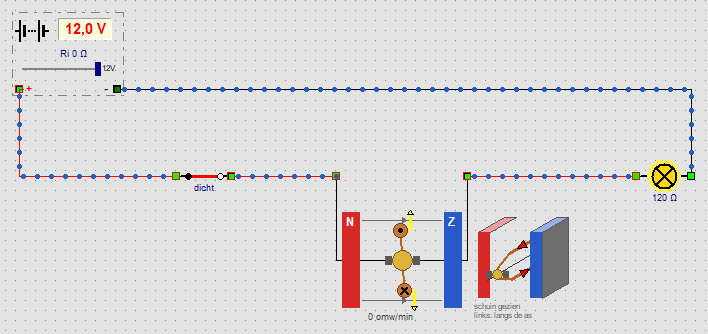

Parcours › Magnétisme › Leçon 6 sur 9
Dans la leçon 5, la force de Lorentz poussait un fil sur le côté. Pliez le fil en une bobine rectangulaire sur un axe entre deux pôles : les deux grands côtés sont parallèles à l’axe. Dans un côté, le courant entre dans l’écran, dans l’autre il en sort. Un côté est donc poussé vers le bas et l’autre vers le haut : la bobine tourne.
Après un demi-tour, le fil qui était à gauche se retrouve à droite. Si rien ne changeait, le courant y circulerait toujours dans le même sens, et la force repousserait alors la bobine en arrière. C’est pourquoi un moteur a un collecteur : à chaque demi-tour, les balais passent d’une moitié de l’anneau à l’autre. Ainsi, le fil qui est à gauche reçoit toujours le courant qui entre dans l’écran et est toujours poussé vers le bas ; le fil de droite est toujours poussé vers le haut. La bobine continue de tourner dans le même sens.
Faites un clic droit sur le moteur et décochez Collecteur. Chaque fil reste alors relié au même balai, comme avec deux bagues collectrices ordinaires. La bobine tourne un peu, oscille puis reste verticale : les forces y sont dirigées le long de la bobine et tout est en équilibre.

Un vrai moteur a des bobines à nombreuses spires sur un induit en fer, et généralement plus d’une bobine, pour éviter le point mort. Les aimants sont parfois permanents, parfois des électroaimants. On en trouve partout : dans un ventilateur, une perceuse, un essuie-glace, un vélo ou une voiture électrique. Dans la leçon 13, vous commandez un moteur avec LogicRun.
1. Le moteur tourne dans le sens antihoraire. Dans quel sens tourne-t-il si vous retournez l’aimant et inversez le courant ?
2. Pourquoi la bobine sans collecteur s’arrête-t-elle toujours à la verticale, et jamais à plat ?
1. De nouveau dans le sens antihoraire. Une inversion inverse les forces ; deux inversions les remettent dans leur sens, comme pour la balançoire électrique de la leçon 5.
2. Quand la bobine est à plat (fils à gauche et à droite), les forces poussent un fil vers le haut et l’autre vers le bas : elle tourne. Ce n’est que verticale (fils en haut et en bas) que les forces sont dirigées le long de la bobine et qu’elle ne tourne plus. Sans collecteur, le courant ne s’inverse jamais : la bobine s’y arrête.